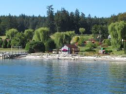

Accomidations
There is alot of different places to stay on the island. Below we are going to go into a deeper dive of what different options you can have! Whatever can work best for you and your party.
Orcas Hotel

The Orcas Hotel is one of the oldest places that you can stay! Very historic and beautiful. But it is one of the furthest places from town. It is right across from the ferry landing though! More Info
West Beach Resort
West Beach Resort is one of my personal places to go even if you aren't staying here. It's outside of town but still close enough that it's not too far of a drive. They have the best sunsets and are very family friendly! More Info